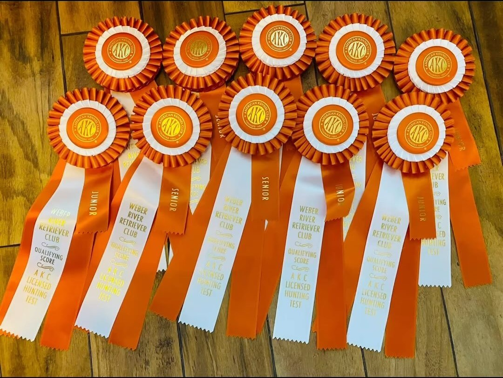

Episode 21 · January 26, 2024 · 3304
(EP:21) Want to run a Junior Hunt Test with your dog? Listen to learn how!

About This Episode
In this episode we talk about the ins and outs of running a Junior Hunt Test through the AKC and what it takes to get your dog ready to run and what it takes to get a title. Good hunting and testing everyone! Links and products that we like: Contacts Us:
Questions about the training topics in this episode? Tyce works with bird dog owners and hunters through Utah Bird Dog Training. Reach out to work with him directly.
Resources & Links
- Kuranda Dog Beds — Elevated, chew-proof dog beds.
- Utah Bird Dog Training — Tyce's professional training services.
Transcript
Full transcript for Episode 21: (EP:21) Want to run a Junior Hunt Test with your dog? Listen to learn how!.
Tyce
Hey everyone, welcome to the Bird Dog Podcast. My name is Tyce. Today I want to walk through the Junior Hunter AKC hunt test — what it requires, how to sign up, what to expect on test day, and why hunt tests are worth pursuing even if you're not a competitive person.
The Junior Hunter test is the entry-level AKC retriever title. Your dog runs single marks: one bird thrown at a time, dog marks it and retrieves it to you. Junior is a land series and a water series — a few single retrieves each. The dog is allowed to run with a flat buckle collar on in Junior. Four passes earns the Junior Hunter title. Each test is typically run over a weekend, one pass per day maximum, so you can potentially earn a pass Saturday and another pass Sunday.
To sign up, go to EntryExpress.net — that is the official AKC hunt test registration platform, not the AKC website itself. Create an account, enter your dog's information, find hunt tests in your state or region by filtering by state, and register before the entry deadline (usually about ten days before the test). After the entry window closes, a running order will be posted. Check your number — if you're running dog #5 out of 50, be there early. If you're #45 out of 50, you have a little more time. But for your first test, just plan to arrive well before the start time, usually 7:30–8:00 AM.
When you arrive, air your dog first — let it go to the bathroom, stretch, settle down. Then check in and find the gallery area, which is where you can watch the dogs ahead of you work. This is valuable. Watch how handlers manage the holding blinds, how they walk their dogs to the line, how they handle the gun, how they set their dogs up. You'll pick up habits and also spot things to avoid. Hunt tests are one of the best environments to become a better handler because you're watching a range of dogs and teams, from first-timers to experienced handlers, all working through the same test.
One tip on the holding blind: turn your dog rear-end facing the blind so it can look outward rather than nose-first into the fabric. Dogs that can't see what's happening around them tend to settle better than dogs that are staring into a wall and hearing guns go off. Keep a slip lead on until just before you go to the line.
Beyond getting a title, there are good reasons to participate in hunt tests even if you're not focused on collecting passes. First, it's a benchmark — it forces you to prepare your dog for a standardized test under pressure, which sharpens your training. Second, titles mean something in breeding: a dog with Junior, Senior, or Master titles demonstrates working ability in its pedigree, not just a name in a lineage. Buyers can see that dogs from your lines have been proven in structured evaluations. Third, the community is excellent. Everyone there is passionate about their dogs and hunting. You build relationships, swap training ideas, and see what good dog work looks like at the highest levels. If you've never been to a hunt test and you're curious, just go watch one — they're free to attend as a spectator. See what the dogs can do, see where your dog measures up, and decide if it's something you want to pursue. Thanks for listening.
About the Host
Tyce Erickson
Tyce Erickson is a professional bird dog trainer and the owner of Utah Bird Dog Training in Utah. For nearly two decades he has worked with pointing dogs, retrievers, and family hunting dogs — helping owners build dogs that are capable and enjoyable in the field. The Bird Dog Podcast is an extension of that work: honest conversations on training, hunting, breeding, and everything that goes into a life spent working dogs.
More About Tyce